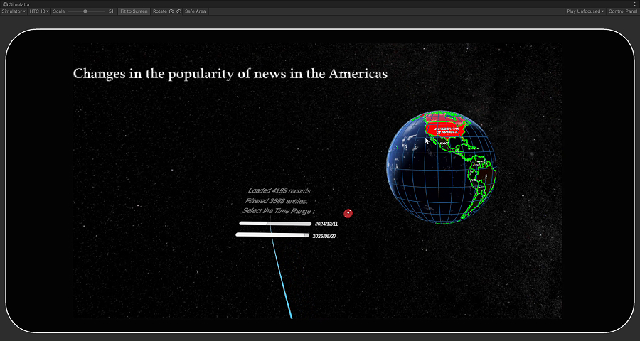

Aenean ornare velit lacus, ac varius enim lorem ullamcorper dolore aliquam.
This feature dynamically displays the number of news articles published by each country within the user-selected time range, using color changes to indicate discussion heat.
Users can see the level of attention each country is giving to a specific news topic, enabling analysis of which countries are more focused on a particular event or topic during a specific time period.
The system dynamically adjusts colors based on each country's news volume, transitioning from red to transparent. Red indicates the highest heat, while transparent indicates no news discussions.
ApplyHeatmapColors MethodThis method retrieves the number of news articles for each country using NewsDataLoader.Instance.GetNewsCountsInRange(start, end) based on the user-defined time range, and maps each country's news count to a color value.
ToggleCountrySurface MethodUsed to render the display status and color of each country on the map. Based on the input color parameters, it updates the display status and color values for each country.
Changes in the popularity of topics discussed in different countries Using the topic popularity mapping function, we adjusted the time slider from 2018 to 2025 and observed several significant differences in the popularity of topics discussed in different geographical areas.
 China and India in Asia, and the United States and Canada in the Americas exhibit the hottest discussion trends. As the main protagonists of the event, all policy changes, tariff adjustments, and diplomatic responses involving China and the United States are widely reported and discussed. India, as a neighboring country closely linked to China in terms of geography and economy, and Canada, as a neighboring country highly dependent on the United States economically, will be significantly impacted and become indirect victims, hence the media continues to report on this issue.
China and India in Asia, and the United States and Canada in the Americas exhibit the hottest discussion trends. As the main protagonists of the event, all policy changes, tariff adjustments, and diplomatic responses involving China and the United States are widely reported and discussed. India, as a neighboring country closely linked to China in terms of geography and economy, and Canada, as a neighboring country highly dependent on the United States economically, will be significantly impacted and become indirect victims, hence the media continues to report on this issue.
At the same time, we found that during the middle to late April 2025 period, the global discussion heat for this topic experienced a brief decline. This can be attributed to the following factors: After entering April, the new round of U.S. tariffs took effect on April 2, sparking high levels of media and public attention and creating a temporary peak in discussions. However, by mid-April, the U.S. did not introduce new sanctions, and negotiations entered a technical consultation phase. Meanwhile, China’s domestic focus shifted to internal economic adjustments: On April 8–9, China held a Central Peripheral Work Conference in Beijing, emphasizing diplomatic strategies and regional cooperation, followed by state visits to Vietnam, Malaysia, Cambodia, with a focus on regional partnerships and economic and trade cooperation. Media coverage of the “trade war” thus shifted its focus. Therefore, the decline in discussion intensity in the latter half of April was due to a combination of factors, including the absence of new conflicts, shifts in media attention, and the gradual implementation of policy adjustments.
Additionally, we identified a visualization issue: the heat distribution in Europe was not clearly discernible, as the geographical areas of European countries are relatively small, making subtle color differences difficult to perceive. We will optimize the visualization zoom or country selection mechanism in the future to present a more accurate distribution of public opinion.
Aenean ornare velit lacus, ac varius enim lorem ullamcorper dolore aliquam.

Aenean ornare velit lacus, ac varius enim lorem ullamcorper dolore aliquam.

Aenean ornare velit lacus, ac varius enim lorem ullamcorper dolore aliquam.
Sed varius enim lorem ullamcorper dolore aliquam aenean ornare velit lacus, ac varius enim lorem ullamcorper dolore. Proin sed aliquam facilisis ante interdum. Sed nulla amet lorem feugiat tempus aliquam.